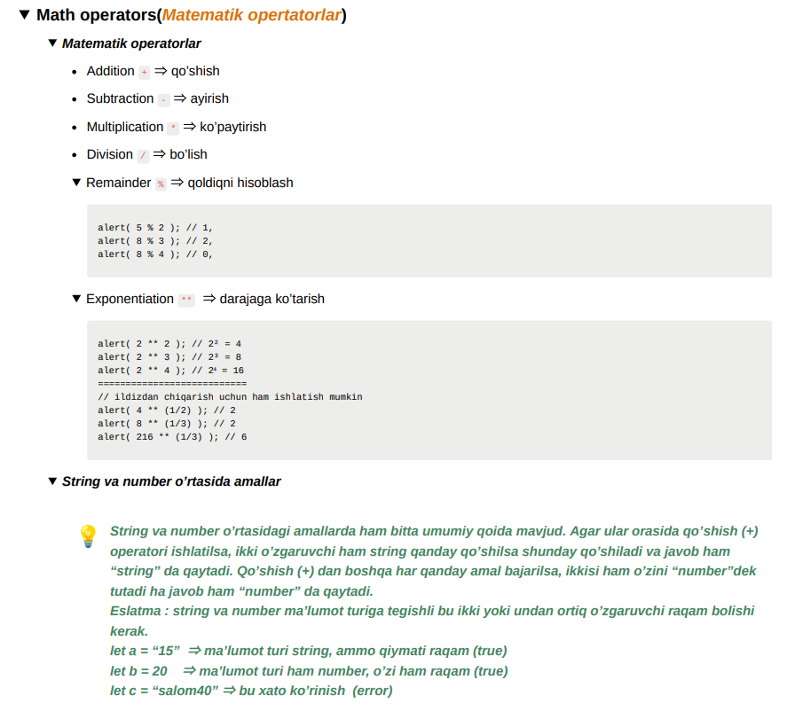

JavaScript nima ?
JavaScript (talaffuzi: /ˈdʒɑːvəskrɪpt/; qisqartmasi: JS /ˈdʒeɪ.ɛs./) yuqori pogʻonali dasturlash tilidir.
1995-yilda amerikalik dasturchi Brendan Eich tomonidan yaratilgan. JavaScript tili barcha asosiy brauzerlar
tomonidan ishlatiladi.
JavaScript orqali biz o'zimiz yaratgan saytlarmizdi ishlatamiz oddiy misol qilib odamnin olsak Css bilan tashqi ko'rnishni stil berib olsak js bilan uni harakatga keltiramiz.
JavaScriptni HTML ga bog'lash
JavaScript faylni HTML ga Script tegi orqali bog'laymiz
Alert() , prompt() , confirm() , document.write()
innerHTML , Template literal
alert() - ogohlantirish, biror bir xabarni modal oynada aks etritsh."Modal" sozi tashqi buyuruvchi oyna bilan ishlamaguncha sahifaning qolgan qismi bilan aloqa qila olmasligini, boshqa tugmalarni bosishini va h.k larni bildiradi.
promot -(taklif), asosan foydalanuvchidan sorash uchun ishlatiladi.
confirm - (tasdiqlash), biror bir ma'lumotni tasdiqlash yoki inkor qilish uchun ishlatiladi. true yoki false javob qabul qiladi
document.write()- Brawser oynasida ogohlantirish uchun.
Matematik operatorlar

InnerHTML , Template literal
JavaScript malumotlarni turli usullarda ko'rsatish imkonyatini mavjud. ularga quydagilar kiradi Birinchi InnerHTML - HTML elementiga yozish
Matematik operatorlar Variables (o'zgaruvchilar) var , let , const , (difference)
Huddiki, insonni oson topish va uni oson chiqarish un ism qo'yilganidek , ozgaruvchilarga ham nom beriladi. Nomni shunday talash kerakki uni ko'rib o'zgaruvchi nima haqida ekaniligni oson anglasin.
const bn e'lon qilingan primitive turdagi o'zgaruvchino qayta o'zgartirib bo'lmaydi.
Data types
JavaScript Data type (ma'lumot turlari) 8 ga bolinadi. Ulardan 7 tasi primitive. 1 tasi non-peimitive hisoblandi
String
Jsda matin yozish uchun ishlatiladingan data type
Number
jsda son raqamlar yozish uchun ishlatiladigan data type
Boolean
true or false || rost yoki yolg'an
appropriation operators (o'zlashtirish operatorlari)
comparison operators (taqqoslash operatorlari)
"==" - ga teng,
"===" - teng qiymat va teng turdagi,
"!=" - teng emas.
"!==" - qiymat teng emas yoki teng emas ,
">" - dan katta,
"<"- dan kam,
">="- dan katta yoki teng
Object Math
Undefined
Data type
String.
Number.
Bigint.
Boolean.
Undefined.
Null.
Symbol.
Object.
Object Math
Math.E
Math.PI
Math.SQRT2
Math.SQRT1_2
Math.LN2
Math.LN10
Math.LOG2E
Math.LOG10E
Math.round(x)
Math.ceil(x)
Math.floor(x)
Math.trunc(x)
Math.pow(a, b)
Event
abort
afterprint
beforeprint
beforeunload
canplay
canplaythrough
change
ended
error
fullscreenchange
fullscreenerror
input
invalid
load
loadeddata
loadedmetadata
message
offline
online
open
pause
play
playing
progress
ratechange
resize
reset
scroll
search
seeked
seeking
select
show
stalled
submit
suspend
timeupdate
toggle
unload
waiting
volumechange
property/metod
bubbles
cancelBubble
cancelable
composed
createEvent()
composedPath()
currentTarget
defaultPrevented
eventPhase
isTrusted
preventDefault()
stopImmediatePropagation()
stopPropagation()
target
timeStamp
type
EventObject
AnimationEvent
ClipboardEvent
DragEvent
FocusEvent
HashChangeEvent
InputEvent
KeyboardEvent
MouseEvent
PageTransitionEvent
PopStateEvent
ProgressEvent
StorageEvent
TouchEvent
TransitionEvent
UiEvent
WheelEvent